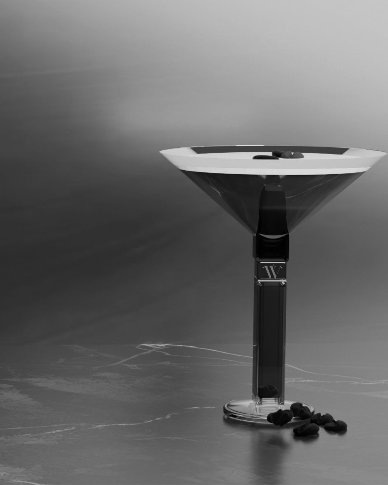

THE WHISPER EXPERIENCE
The Whisper experience is all about making the little moments feel special. From choosing your shade to the final swipe of gloss, every detail is inspired by nights out, good drinks, and feeling your best. Whether you're getting ready for a night out or just adding a little something to your day, Whisper is made to give you that extra bit of confidence and shine.
